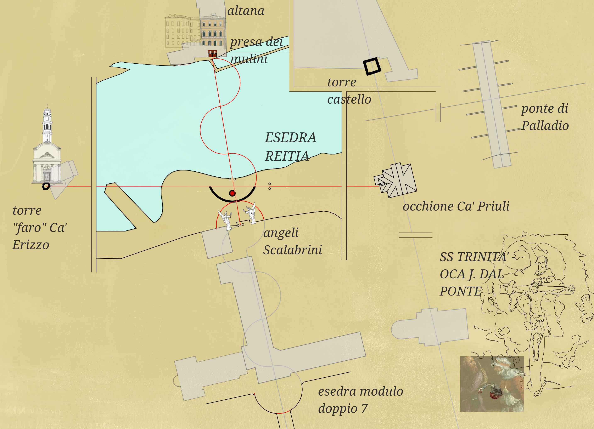

Riti in corso
REITIA II — 4 e 11 luglio 2026
Due riti di soglia sul Brenta.
Sabato 4 luglio
In Riva Volpato: abbiamo lasciato un segno sul nostro talismano e, varcata la soglia, lo abbiamo spezzato in due per affidarne una metà al fiume.
Sabato 11 luglio
Argilla, fuoco, acqua. Il rito si compie dall’origine: raccoglieremo con le nostre mani l’argilla da un’antica cava romana e plasmeremo i talismani seduti nell’esedra, sulla riva del Brenta attorno a un forno a buca, con il maestro ceramista Antonio Bonaldi.
Programma essenziale
- Ore 8:00 — ritrovo davanti a Villa Bianchi Michiel per la raccolta dell’argilla.
- Ore 9:00 — ritorno in Riva Volpato: modellazione dei talismani e accensione del forno a buca.
- Dalle 10:00 — disegno sulle medaglie dell’oca sacra e rito di soglia in acqua.
- Domenica mattina — estrazione dei pezzi dal forno spento. Chi desidera potrà completare il rito con il talismano modellato e cotto il giorno prima, oppure conservarlo per un’altra occasione.
La soglia d’acqua può essere varcata con immersione completa o parziale, ciascuno secondo il proprio passo.
A seguire, per chi desidera, Ca’ Rezzonico da Rezzonico Naturalmente.
Invia la tua richiesta di partecipazionePer la stampa
REITIA II è un rito partecipativo sul Brenta che intreccia argilla, fuoco, acqua e memoria del territorio. Dopo la prima apertura del 4 luglio, il rito prosegue sabato 11 luglio con raccolta dell’argilla da un’antica cava romana, modellazione dei talismani, forno a buca con Antonio Bonaldi e immersione nel fiume.
Questa edizione estiva nasce anche dal tracciamento di un’esedra di ciottoli sulla riva del Brenta che incardina una rete di allineamenti narrativi tra Ca’ Priuli, Ca’ Erizzo, gli Scalabrini e Palazzo Calmonte: un'esedra “sestante del senso” che amplifica il racconto del fiume.
Per immagini, interviste e materiali stampa: info@reitia.org
Leggi l’articolo su Bassano News: L’oca di Reitia e il suo sestante
Elementi visivi
- talismani in argilla con il segno dell’oca di Reitia
- esedra di pietre sulla riva del Brenta
- immersione rituale nel Brenta
- allineamenti tra architettura, fiume e paesaggio
Il sestante del senso
Con la progettazione dell’esedra sulla riva del Brenta è emersa una densa rete di relazioni a partire da Ca’ Priuli, con Palazzo Jonoch Calmonte, gli Scalabrini e Ca’ Erizzo, come una costellazione in dialogo con il Ponte di Palladio e il castello degli Ezzelini.
Le prime indagini d'archivio suggeriscono che, al tempo della costruzione di Palazzo Jonoch, la famiglia Jonoch abitasse proprio a Ca’ Priuli e controllasse i terreni oggi occupati dagli Scalabrini.
Quella che appariva come un'enigmatica coincidenza comincia così a mostrarsi come una possibile memoria urbana che l'esedra, anche a prescindere dalla prova documentale, rievoca come mappa del senso.

Schema narrativo degli allineamenti incardinati nell’esedra in dialogo col Ponte Vecchio: Ca’ Priuli e Ca’ Erizzo; gli Scalabrini e Palazzo Calmonte; il ponte palladiano e le montagne.
Chi siamo
REITIA è una piattaforma transdisciplinare che esplora patrimonio incarnato, performance partecipativa e pratiche culturali site-responsive nell’Europa contemporanea.
Attraverso eventi pubblici, pratiche rituali, immersione ambientale e collaborazioni artistiche, REITIA indaga come paesaggi, memoria culturale e narrazioni territoriali possano diventare agenti attivi di trasformazione collettiva.
Progetti attuali
- REITIA II — Bassano del Grappa, luglio 2026
- Stockholm ICEbrrreakers
- Large Feeling Model
- Ricerca e collaborazioni artistiche
Collaborazioni
Le attività recenti coinvolgono collaborazioni con artisti, ricercatori, performer, artigiani e custodi di conoscenze locali tra Svezia e Italia settentrionale.
Contatti
Email: info@reitia.org